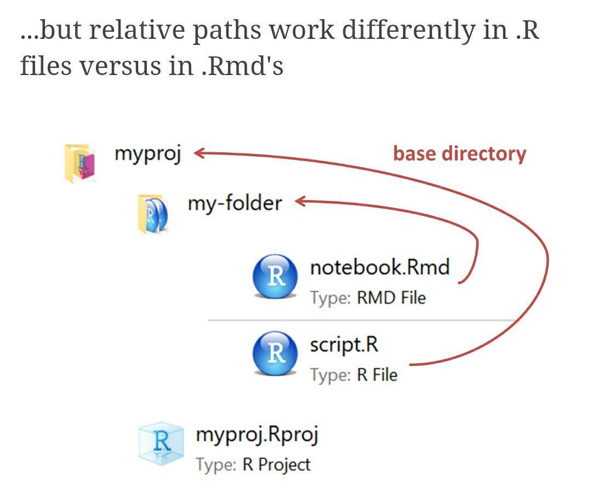

05:00
Lesson 1: File Organization within R
Using OneDrive
We all have free access to OneDrive to store files
Let’s login into our online accounts
You can also download OneDrive for your desktop
Allows you to access the OneDrive from your computer’s interface instead of the browser
Creates a link between your computer and the cloud!
Let me show you mine
- I can access all the files through RStudio as well!
Let’s take a couple minutes to log into OneDrive
Folder organization
Make these folders in your computer
- Only make them in OneDrive if you have a desktop connection
For a project, I usually have the following folders
- Background
- Code
- Data_Raw
- Data_Processed
- Dissemination
- Reports
- Meetings
For our class, I suggest making one folder for the course with the following folders in it:
- Data
- Homework
- Notes
- Project
- Quizzes
- And other folders if you want
- Take a few minutes to create these folders
05:00
Now download some data from my the OneDrive
Go into the Student files folder
Download the dataset in Sample_folder, under Data
Create your own Sample_folder under Notes
- Save the dataset there
Alternatively, you can download all of Sample_folder and then put that under Notes
Creating project in RStudio
Way to designate a working directory: basically your home base when working in R
We have to tell R exactly where we are in our folders and where to find other things
A project makes it easier to tell R where we are
Basic steps to create a project
Go into RStudio
Create new project for this class (under
Fileor top right corner)
Once we have projects, we can open one are R will automatically know that its location is the start of our working directory
Let me show you my process
I will create one in my Sample_folder
I will show you how I switch between classes
05:00
Creating a new qmd file
Basic steps
Create new
.qmd(underFileor top left corner)Decide on document types/options
Let me show you my process
Create a
.qmdin your Sample_folder under any folder (maybe Notes is good)
05:00
Looking at Source vs. Visual
Here package
Just substitute
.Rmdwith.qmdBasically, a
.qmdfile and.Rfile work differently- We haven’t worked much with
.Rfiles
- We haven’t worked much with
For
.qmdfiles, the automatic directory is the folder it is in- But we want it to be the main project folder
herecan help with that

Install here package
- Install
herepackage: you can do this in your console (not inside.qmdfile)
install.packages("here")Within your console, type
here()and enter- Try this with
getwd()as well
- Try this with
Using here() to load data
There
here()function will start at the working directory (where your.Rprojfile is) and let you write out a file path for anythingTo load the dataset in our
.qmdfile, we will use:
data = read_excel(here("./Data/CH05Q01.xls"))
data = read_excel(here("Data", "CH05Q01.xls"))Watch out when using lubridate package simultaneously
Use here::here() if you have lubridate loaded within same .qmd. This will tell R to use the function here() within the here package instead of lubridate’s here() function. To call lubridate’s function, we’d use lubridate::here()
05:00